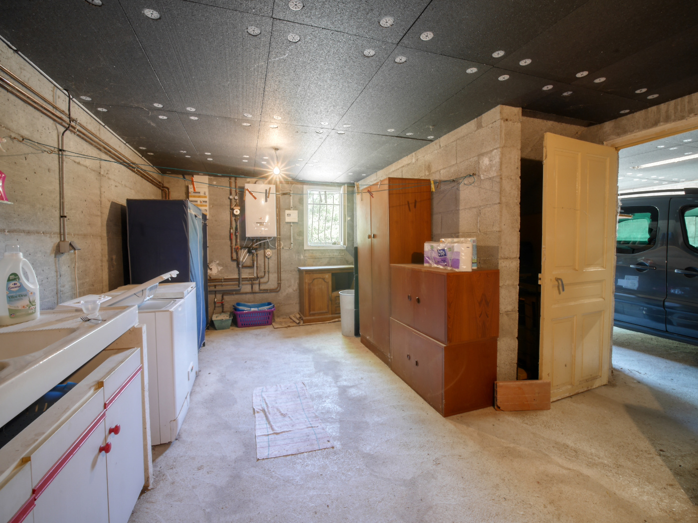
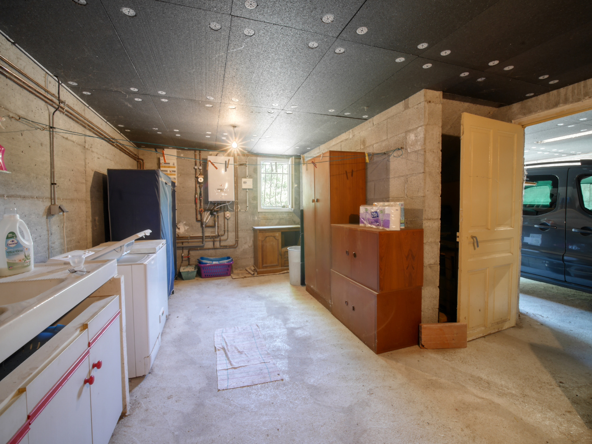

A propos
Dans la vallée de la Drôme, entre Saillans et Die, sur la commune paisible d’Espenel, découvrez cette charmante maison construite dans les années 2000. Bénéficiant d’un cadre tranquille et d’une vue imprenable sur les reliefs environnants, cette propriété a été soigneusement entretenue par son unique propriétaire.
Implantée sur une parcelle arborée de 1 500 m², la maison vous surprendra dès l’entrée par ses hauts plafonds dans la pièce de vie, baignée de lumière tout au long de la journée grâce à ses nombreuses ouvertures. De plain-pied, elle offre deux chambres et une grande salle de bains, garantissant un confort de vie optimal au quotidien.
Vous apprécierez également le sous-sol complet, idéal pour le stockage, le rangement, ainsi que le stationnement de véhicules. La propriété bénéficie en prime d’un terrain jouxtant le ruisseau du Morina, un véritable atout pour vous rafraîchir lors des périodes les plus chaudes de l’année.
Cette maison vous séduira par son charme naturel, ses possibilités de rangement et ses différents espaces extérieurs, parfaits pour profiter pleinement de la nature environnante.
Photos


 

Vidéo Intérieur
Vidéo Extérieur
Géolocalisation
Cadastre
Vue aérienne

Détails Techniques
- Année de construction : 2000
- Année d’achat : 2000
- Matériaux de construction : Béton banché sur la partie sous-sol + parpaing avec brique
- Isolation : laine de verre 100mm/ isolation polystyrène par le sous-sol au profit du niveau supérieur
- Toiture: Charpente traditionnelle
- Assainissement : Individuel - diagnostic en cours
- Huisseries : Fenêtres : PVC - Baie : PVC
- Volets : PVC - volet roulant éléectrique pour la baie vitrée
- Superficie habitable : 77 m2
- Surface extérieure : 2 197 m² (1 508 + 304 + 385)
- Nombre de chambres : 2
- Garage/ Sous-sol : 77 m²
- Mode de chauffage : Chaudière gaz très haute performance énergétique (changée en 2020) chauffage par le sol (eau chaude) Poêle à bois installé fin 2023
- Coût annuel du chauffage : GAZ : environ 50€/mois (moyenne depuis l'installation) - BOIS : 4 à 5 stères par an
- Coût annuel de l’électricité : 900 € pour 2024
- Taxe foncière : 531 €
- Autres informations : Portail de garage éléctrique / possibilité d'agrandissement de la maison